眉毛
眉毛三个小技：改预设、拉出埋眉、补上描边
选一款短眉，改纵宽、间距和倾斜
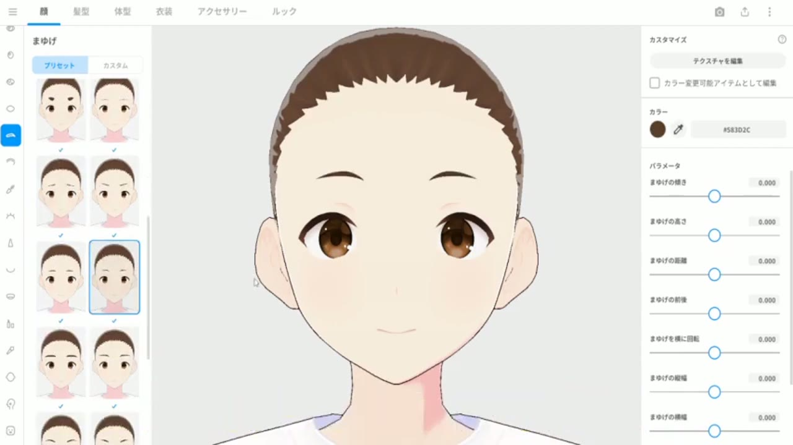
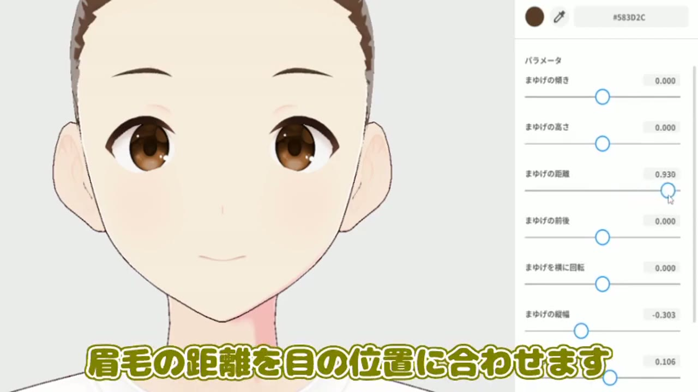
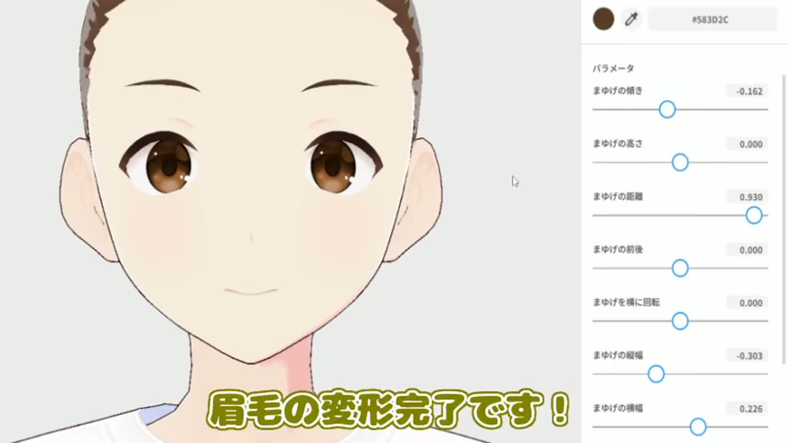
录屏里没有版本号。片头蓝底字是「眉毛を変形しよう」。口播说自己画线容易歪、粗细也不像眉毛，不如从预设里挑一款再改形。这里挑的就是左侧那款短而细的。先动「まゆげの縦幅」和「まゆげの横幅」：纵宽的圆点拖到中线左边，眉在上下方向变薄；横宽先也被拖到左边，口播接着说还想再宽一点，完成时横宽的圆点又回到了中线右边。只改宽窄会和眼睛对不齐，所以把「まゆげの距離」往右拖，两眉往外分开，对到眼睛上方。角度用的是「まゆげの傾き」，圆点往左拖。字幕把这一下叫作把眉毛变得更利落。同一列表再往下还有「眉の形状（女性）」和「眉の形状（男性）」，完成时它们仍在中线，这一步没动。「まゆげの高さ」「まゆげの前後」「まゆげを横に回転」也还在中线。画面上的读数不要照抄，对着自己的眼睛看眉落在哪。
表情把眉埋进皮肤时，前后和横旋转来回修
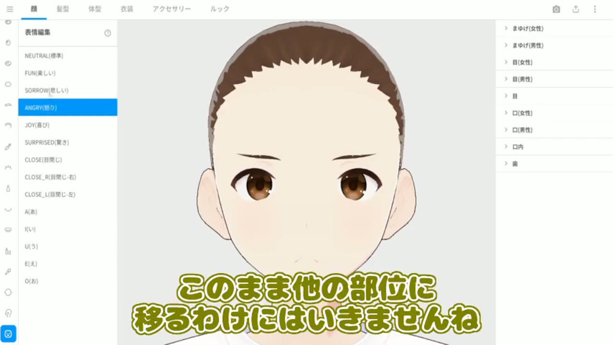
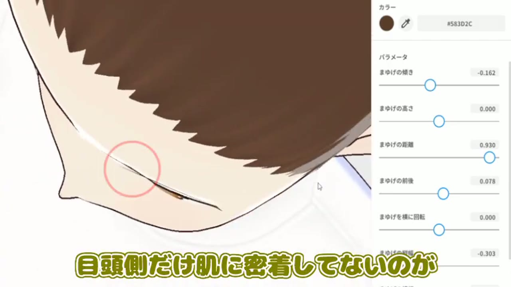
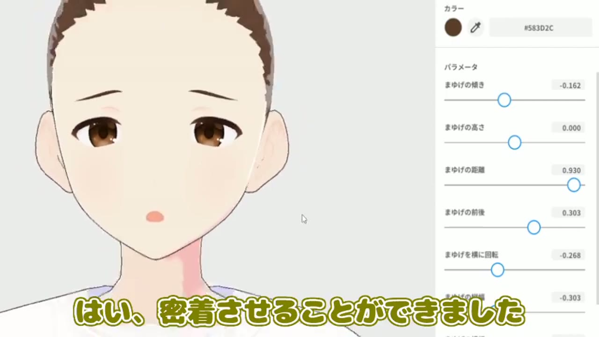
口播说预设一变形，换表情时眉会埋进皮肤。画面上先点开「表情編集」，选 ANGRY(怒り)，眉被压进上眼睑。回到「まゆげ」的「パラメータ」，把「まゆげの前後」往右拖，眉往前冒出来。再把镜头转到头顶：内眼角那头还翘着，没贴上皮肤。字幕点名用「まゆげを横に回転」。这一段是把「まゆげを横に回転」往左拖，让眉侧过来贴上皮肤；一贴又会重新埋进去，就再把「まゆげの前後」往右带一截。两个滑杆这样来回，直到从头顶看缝合上。画面上的步骤条写的是：①表情変更をする。②埋まっていたら、眉毛を前に出す。③密着させるために眉毛を横に回転。④自然になるまで②と③を往復。⑤他の表情も確認。字幕还写，就算没被头发挡住，只要不从上面看就几乎看不出来；接着是「もしこの手順が面倒な場合は」。口播把后半说成：嫌麻烦的话，只把埋进去的眉往前拉出来就行。
眉毛没有轮廓设置，就在纹理下层描边
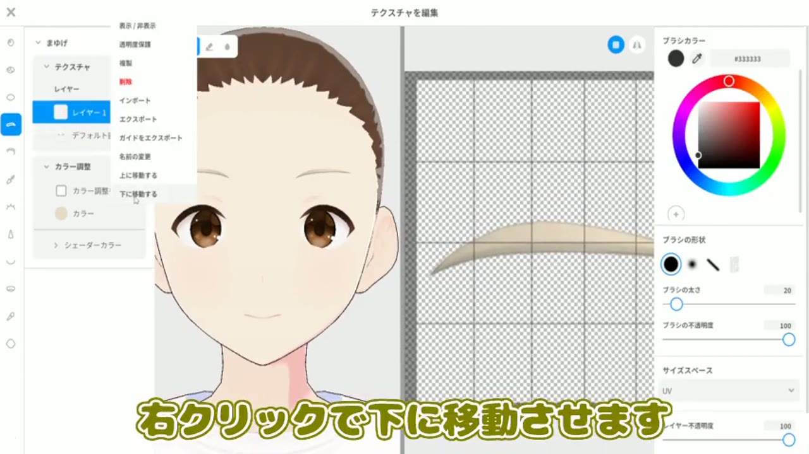
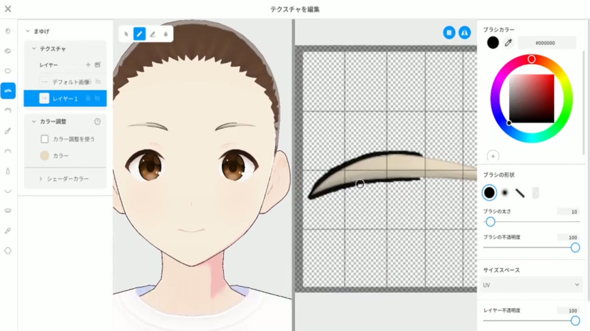
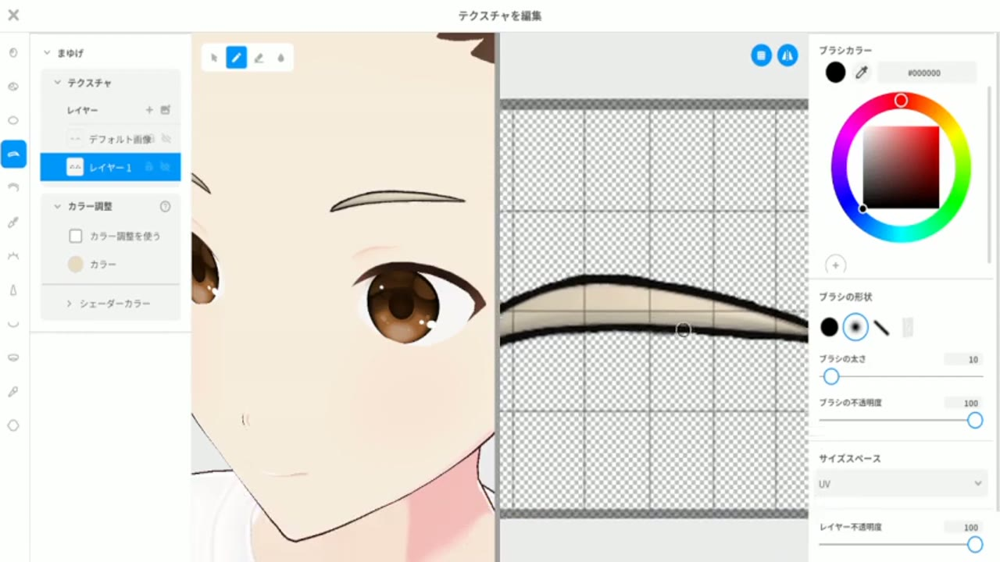
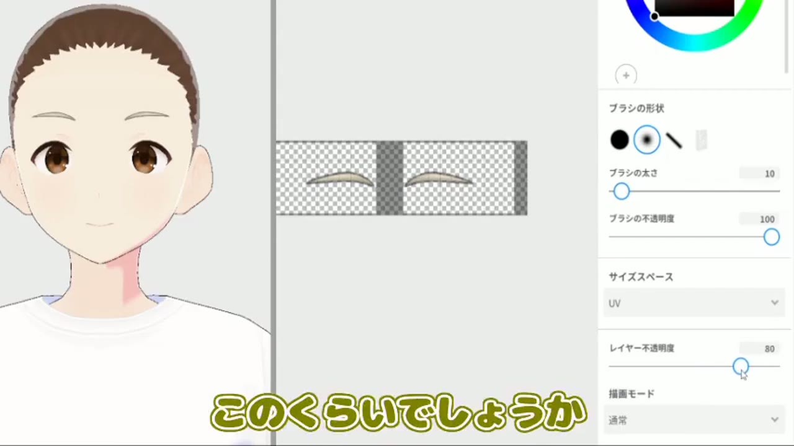
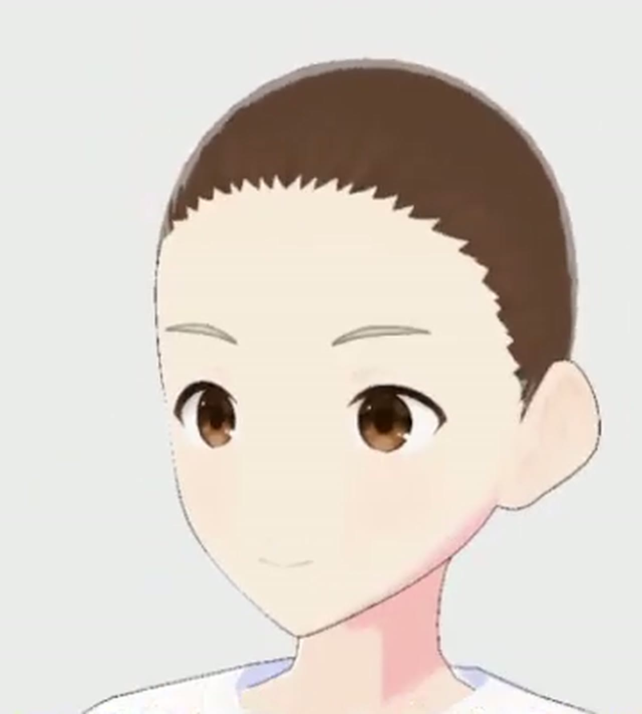
蓝底标题是「アウトラインをつける」。字幕写，眉毛和头发、皮肤不一样，在设置里没法加轮廓，所以辛苦改好的眉会和皮肤混成一块。入口是「顔」→「まゆげ」右侧「カスタマイズ」里的「テクスチャを編集」。字幕让先加新图层：列表里出现的名字是「レイヤー1」，「レイヤー」右边有加号。然后在「レイヤー1」上右键，点「下に移動する」，让它垫到「デフォルト画像」下面。描在下层的线只会从预设眉形的外面露出来，所以看起来像一圈边。口播说把镜像打开、颜色用黑。描线时「ブラシカラー」的色块是黑的；画布右上角两个圆按钮这一段是蓝色的，画面上没有按钮名字，不写。描的时候用「ブラシの形状」里第一个实心圆，在右边的纹理上沿着眉形走，字幕要求粗细尽量均匀。口播把笔刷大小说成大概一成；画面上的滑杆叫「ブラシの太さ」，描线时圆点在左段，不要把某一帧的读数当成必须填的数字。硬边描完还是磕磕绊绊的。字幕把第二个发虚的圆叫作フワフワしたブラシ形状，总结条写成「フワフワブラシでガタガタを修正」：换上它，顺着描边的缘再抹一遍。字幕接着说画好就缩小看。线太抢的话，把「レイヤー不透明度」从右端往左拖，让黑边和肤色混在一起。字幕说大概这个程度，不写滑杆上的数字。「描画モード」一直是「通常」，视频没有改它。画面上的收尾四条是：①新規レイヤーを追加し、下に移動させる。②均等な太さを意識してアウトラインを描く。③フワフワブラシでガタガタを修正。④レイヤー不透明度で肌に馴染ませる。